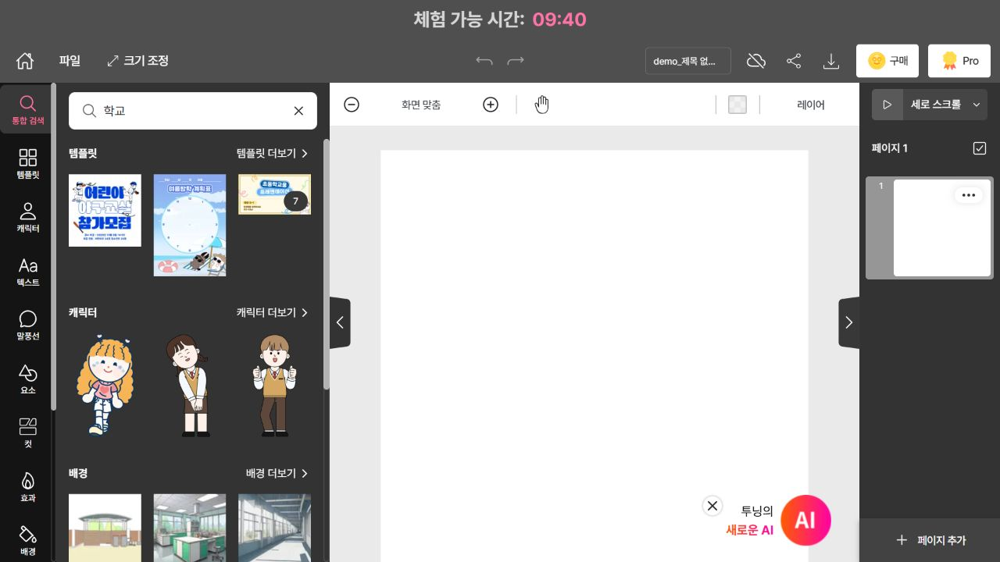
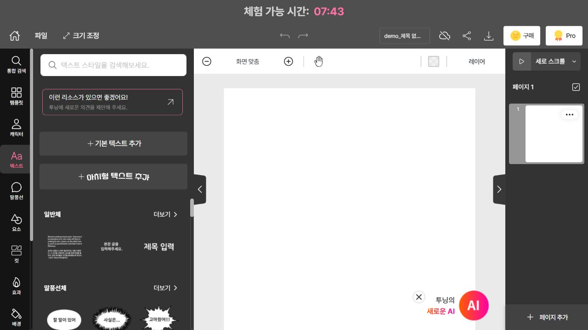
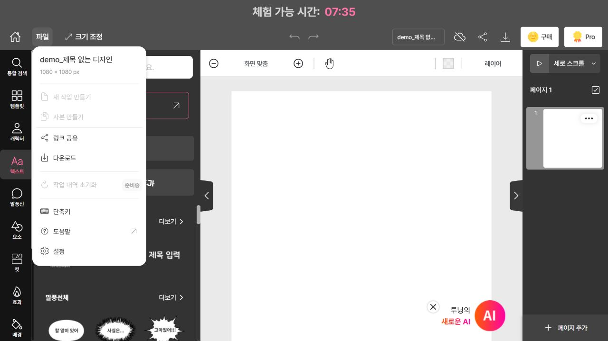
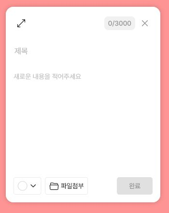

별은 실제로 어떤 모습일까?
- 거리: 지구에서 얼마나 떨어져 있나요? 단위도 적어요.
- 밝기: 겉보기 밝기와 실제 밝기를 구별해요. 등급을 쓴다면 겉보기등급인지 절대등급인지 밝혀요.
- 색: 어떤 색으로 알려져 있나요?
- 표면 온도: 수치·단위와 함께 색과의 관계를 설명해요.
질량, 크기, 거리 지수 등은 조사한 내용을 더 풍부하게 만드는 확장 정보로 활용할 수 있어요. 배우지 않은 공식을 억지로 넣지는 않아도 됩니다.
STUDENT GUIDE · 중3 과학
형식은 자유롭게. 과학 정보와 이야기거리는 둘 다!
실제로 존재하는 항성 하나를 선택해 조사한 뒤, 투닝으로 나만의 전시물을 만듭니다. 4컷 만화, 포스터, 카드뉴스 등 어떤 형식이든 좋아요. 한 작품 안에서 과학 정보와 이야기를 구별해 보여 주세요. 완성한 작품은 우리 반 투닝 보드에 올립니다.
제출일·반별 보드 주소·총점·세부 배점은 선생님이 추후 안내합니다.
아래는 작년 안내문의 예시 목록입니다. 이 중에서 골라도 되고, 목록에 없는 다른 항성을 골라도 됩니다. 이름, 색, 관련 이야기 등 마음이 가는 이유 하나에서 출발해 보세요.
여기는 생각을 정리하는 메모 칸입니다. 아래 ‘내 계획 내려받기’로 저장하세요. 새로고침하면 입력이 사라집니다.
이 활동의 주인공은 ‘항성’입니다. 화성·목성은 행성이고, 오리온자리는 하늘의 영역을 나타내는 별자리 이름입니다. 별자리가 마음에 든다면 그 안의 항성 하나를 골라 보세요.
알파 센타우리처럼 여러 별로 이루어진 항성계를 고를 때는 어느 구성원을 조사하는지 적으세요. 시리우스 A와 B처럼 구성원이 다른 별의 거리·온도·질량을 섞지 않도록 확인하세요.
질량, 크기, 거리 지수 등은 조사한 내용을 더 풍부하게 만드는 확장 정보로 활용할 수 있어요. 배우지 않은 공식을 억지로 넣지는 않아도 됩니다.
모든 종류를 다 넣을 필요는 없어요. 하나를 골라 흐름이 있는 이야기로 전해 보세요. 창작만으로 과학 정보 조사를 대신할 수는 없어요.
자료마다 값이 다르면 어느 항성·구성원에 대한 값인지, 측정 방법과 발표 시기가 다른지 살펴보세요. 정리하기 어려우면 출처의 ‘약’ 또는 범위를 유지하고 선생님께 질문하세요.
| 자료에 붙일 표시 | 표현 예시 |
|---|---|
| 과학적 사실 | “이 별의 표면 온도는 약 ○○ K이다.” — 기관·문서·링크 표시 |
| 전해 오는 이야기 | “○○ 지역의 전설에서는 이 별을 …로 이야기한다.” — 이야기 출처 표시 |
| 나의 창작 | “만약 이 별이 나에게 말을 건넨다면…” — 창작임을 명시 |
| 그림의 종류 | 실제 관측 사진 / 설명용 모식도 / AI 생성 상상도 중 해당하는 표시 |
제공 기관 또는 저자 / 자료 제목 / URL 또는 책 쪽수 / 확인 날짜를 적으세요. 사진은 제공 기관·작가와 사용 조건도 확인하세요.
예: NASA / Stars in an Exoplanet World / https://science.nasa.gov/exoplanets/stars/ / 확인 날짜: 내가 실제 읽은 날짜
AI 답변 자체를 검증된 출처로 삼지 마세요. AI가 알려 준 링크가 실제로 열리는지, 그 자료가 해당 내용을 말하는지 직접 확인해요.
① 별 소개·선택 이유
② 과학 정보·개념 설명
③ 신화·역사·창작 이야기
④ 사실과 이야기 정리
과학 정보가 작아지면 별도 설명 칸을 붙여요. 출처는 하단에 모아도 좋아요.
상단: 별 이름·핵심 질문
왼쪽: 과학 정보
오른쪽: 이야기거리
하단: 그림 설명·출처
한 장에 담기 어렵다면 여러 장으로 나눌 수 있어요.
① 별 소개
② 과학 정보
③ 이야기거리
④ 핵심 정리·출처
장수는 예시입니다. 내용을 읽기 쉽게 조절하세요.
다른 형식도 가능합니다. 어떤 형식이든 과학 정보와 이야기거리, 별의 모습을 표현한 그림, 출처를 담으세요. 위 배치는 구성 예시이며 새로운 배점 기준이 아닙니다.
투닝 에디터는 글·캐릭터·배경 등을 배치해 작품을 만드는 곳이고, 투닝 보드는 완성한 작품을 모아 공유하는 곳입니다. AI 이미지 생성은 표현을 돕는 선택 기능입니다.
아래 사진은 2026년 10월 6일 확인한 투닝 에디터의 실제 공개 체험 화면입니다. 체험 모드에서는 저장·다운로드·공유에 로그인이 필요해요. 수업 계정과 화면은 일부 다를 수 있습니다.

선생님이 안내한 방식으로 투닝에 로그인하고 에디터로 이동하세요. 다른 사람의 계정을 사용하지 말고, 비밀번호를 작품이나 보드에 적지 마세요.
만들 형식에 어울리는 템플릿이나 빈 작업 화면을 선택하세요. 예쁘게 꾸미기 전에 제목, 과학 정보, 이야기, 출처가 들어갈 자리를 먼저 정해요.
왼쪽 ‘텍스트’ → ‘기본 텍스트 추가’에서 제목과 설명을 넣을 수 있어요.

조사 메모를 짧은 설명과 대사로 바꿉니다. 숫자·단위를 빠뜨리지 않고 ‘과학적 사실’, ‘전해 오는 이야기’, ‘나의 창작’ 표시를 넣어요. 작은 글씨로 내용을 억지로 채우지 마세요.
내용을 이해하는 데 도움이 되는 요소를 골라요. 별의 모습을 담은 그림이나 사진을 최소 하나 넣고 종류와 출처를 표시해요. 생성 이미지 속 글자는 틀릴 수 있으니 제목과 수치는 직접 입력하세요.
AI는 표현 아이디어를 제안할 수 있지만 수치나 신화의 출처를 틀릴 수 있어요. 조사한 자료와 대조하고 글과 그림이 같은 내용을 말하는지 확인해요.
공개 체험 화면에서는 상단 ‘파일’ 메뉴에 ‘링크 공유’와 ‘다운로드’가 표시됩니다. 해당 기능을 사용하려면 로그인해야 해요.

작품의 저장 상태를 확인하고 다시 열어 보세요. 계정에서 제공하는 공유·내보내기 기능을 확인해 선생님이 지정한 형식으로 준비합니다. 사용하는 방식은 선생님 안내를 따르세요.
이야기 구성 도움
상상도 만들기 도움
생성 후에도 색·장면이 의도에 맞는지 확인하고 작품에 ‘AI 생성 상상도’라고 표시하세요.
이 가이드에 파일을 올리는 것이 아닙니다. 최종 작품의 제출 장소는 투닝 보드입니다. 보드에 올렸는지, 올라간 작품이 열리는지까지 확인하세요.

보드 공유코드: 우리 반 작품 전시장에 들어갈 때 사용합니다.
검사 참여코드: 사전·사후 답안을 같은 학생끼리 연결할 때 사용합니다. 선생님이 학생마다 다르게 정해 줍니다.
투닝 로그인에는 선생님이 안내한 수업 계정을 사용하세요. 보드 코드가 계정 비밀번호를 대신하지는 않습니다.
작성 버튼이 없거나 첨부가 막히면 선생님께 알려 주세요. 학생의 작성 권한은 보드 설정에 따라 달라집니다.
0 / 8 확인했어요.
이 체크리스트는 작품을 점검하는 도움말입니다. 별도의 채점표가 아니며, 체크 여부가 선생님께 전송되지는 않습니다.
“○○ 설명 덕분에 별의 특징을 이해했어. 그런데 △△ 부분은 과학적 사실인지 창작인지 표시해 주면 더 잘 알 수 있을 것 같아.”
교과서와 선생님이 제공한 자료부터 읽고, 다음 공식 자료로 확인 범위를 넓혀 보세요.
공개 자료 확인: 2026-10-06. 이 페이지의 작품 구성 예시는 수업을 위해 새로 만든 예시입니다.